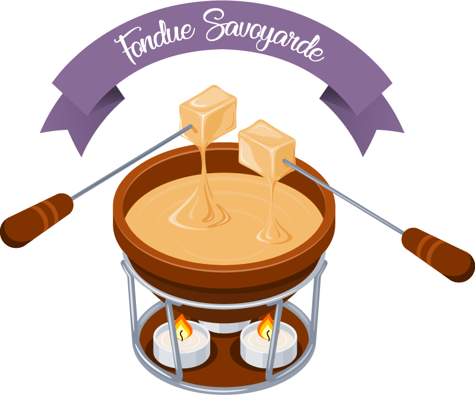

Fondue Savoyarde

Description
Fondue Savoyarde is a traditional Swiss and French dish made with melted cheese, white wine, and garlic.
It is typically served with pieces of bread for dipping.
This warm and comforting dish is perfect for sharing with friends and family during the colder months.
Ingredients for 4 persons
- 1 clove of garlic
- 1 1/2 cups of dry white wine
- 1/2 pound of "Gruyère" cheese
- 1/2 pound of "Emmental" cheese
- 1/2 pound of "Comté" cheese
- 1 tablespoon of cornstarch
- 1 tablespoon of kirsch
- 1 loaf of French bread
Steps
- Peel the garlic clove and cut it in half. Rub the inside of a fondue pot with the cut sides of the garlic.
- Pour the white wine into the fondue pot and heat it over medium heat until it is hot but not boiling.
- Grate the "Gruyère", "Emmental", and "Comté" cheeses and toss them with the cornstarch until they are well coated.
- Add the cheese mixture to the fondue pot, a handful at a time, stirring constantly until the cheese is melted and smooth.
- When the cheese is elastic it's ready to be eat
ENJOY YOUR MEAL !
Back to home page